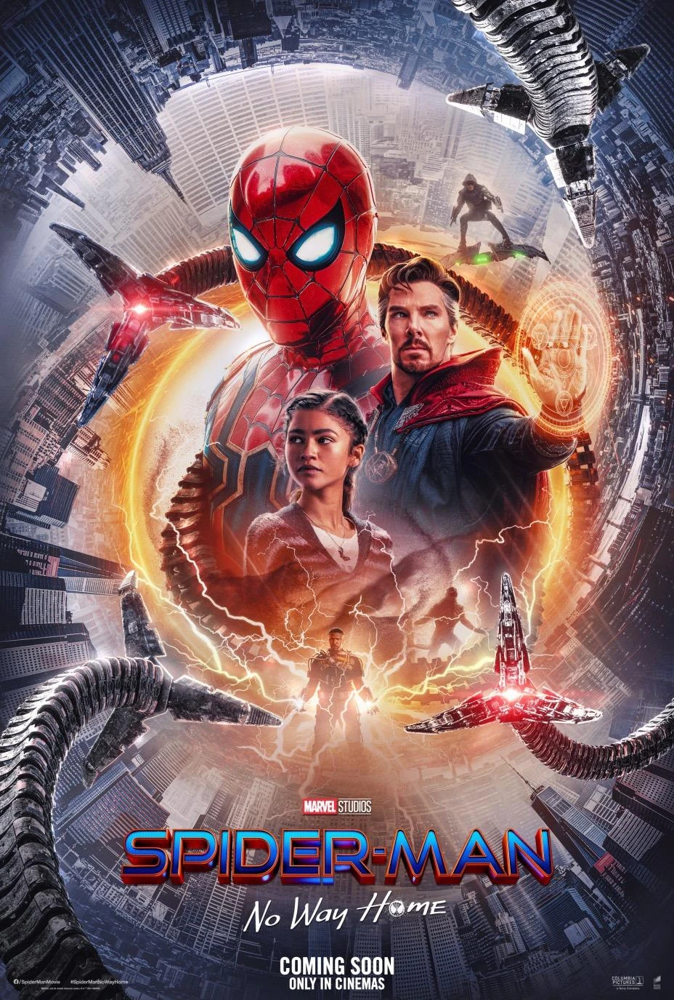
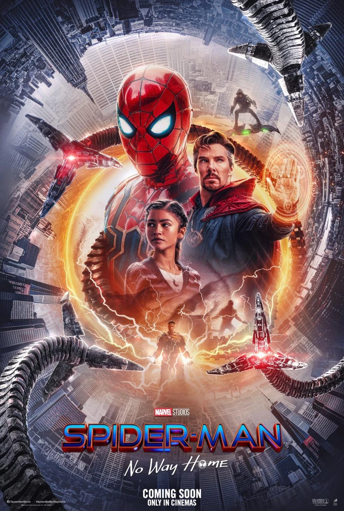

Biografía
Spider-Man, también conocido como Peter Parker, es un superhéroe ficticio creado por Stan Lee y Steve Ditko para Marvel Comics. Apareció por primera vez en Amazing Fantasy #15 en 1962. Peter Parker era un estudiante de secundaria que fue mordido por una araña radiactiva, lo que le otorgó habilidades sobrehumanas.
🧑🔬 Peter Parker: El Hombre Detrás de la Máscara
Peter Benjamin Parker nació en Queens, Nueva York. Desde pequeño fue un chico tímido, inteligente y apasionado por la ciencia. Criado por sus tíos May y Ben tras la muerte de sus padres, Peter creció con valores sólidos, aunque sufrió acoso escolar y aislamiento social.
Todo cambió el día que fue mordido por una araña radiactiva en una visita escolar. De repente, desarrolló habilidades extraordinarias: fuerza sobrehumana, agilidad, reflejos mejorados, y un “sentido arácnido” que le alerta del peligro. También descubrió que podía trepar paredes y diseñó unos lanzatelarañas para desplazarse por la ciudad.
🕸️ El Nacimiento de Spider-Man
Al principio, Peter usó sus poderes para beneficio personal. Se convirtió en una celebridad televisiva, pero su indiferencia tuvo consecuencias trágicas: dejó escapar a un ladrón que más tarde mataría a su querido tío Ben. Ese momento lo marcó para siempre. Fue entonces cuando adoptó su filosofía de vida:
“Un gran poder conlleva una gran responsabilidad.”Desde ese día, Peter se convirtió en Spider-Man, un héroe que lucha por el bien, aunque eso le cueste su reputación, sus relaciones y su tranquilidad.
💔 Vida Personal y Doble Identidad
Peter ha tenido que equilibrar su vida como estudiante, científico y fotógrafo con su rol como superhéroe. Ha amado profundamente, ha perdido a seres queridos, y ha enfrentado dilemas morales que lo hacen más humano que muchos otros héroes.
Sus romances más importantes incluyen:- Gwen Stacy, cuyo trágico destino lo persigue
- Mary Jane Watson, su amor más duradero
- Felicia Hardy (Gata Negra), una relación intensa y peligrosa
Poderes y Habilidades
- Fuerza sobrehumana
- Agilidad y reflejos mejorados
- Sentido arácnido
- Capacidad para trepar paredes
- Creación de telarañas artificiales
Principales Enemigos
- Duende Verde (Norman Osborn)
- Doctor Octopus (Otto Octavius)
- Venom (Eddie Brock)
- El Hombre de Arena
- Lagarto (Dr. Curt Connors)
Aliados
- Mary Jane Watson
- Tía May
- Gwen Stacy
- Los Vengadores
- Iron Man (Tony Stark)
Películas Destacadas
- Spider-Man (2002) - Dirigida por Sam Raimi
- Spider-Man 2 (2004)
- Spider-Man: Homecoming (2017)
- Spider-Man: No Way Home (2021)
- Spider-Man: Across the Spider-Verse (2023)
 
